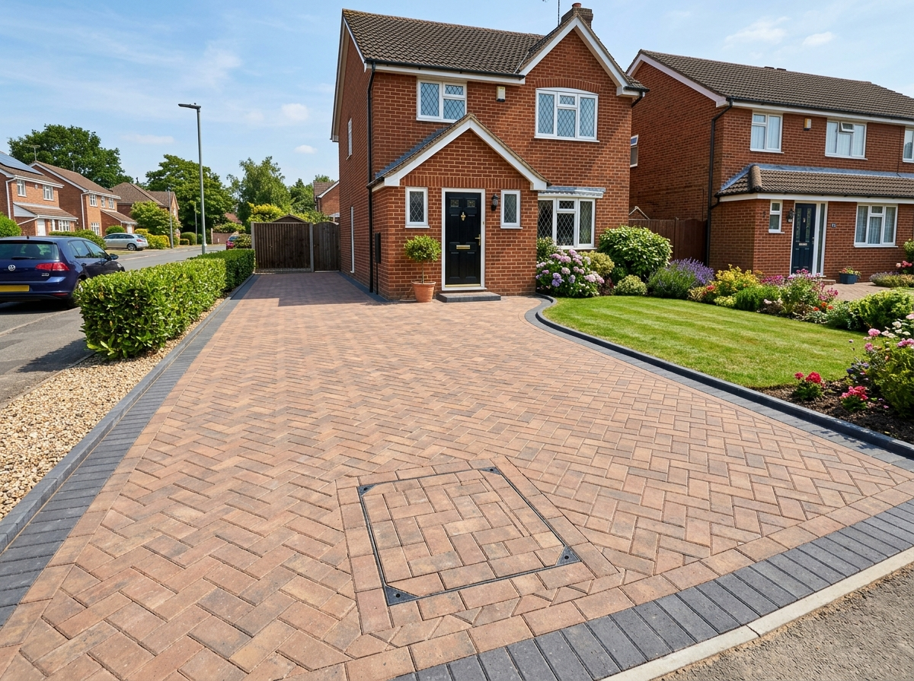

Quality Driveways & Patios – 20 Years' Experience
Driveway & Patio Installations in Taplow, Maidenhead & Surrounding Areas
Expert Groundworks, Quality Block Paving, Shingle Driveways & Patios Built From the Ground Up.
Looking to install a new driveway or transform your garden with a new patio? Mini Dig It provides professional driveway and patio groundworks, precision excavation, and full project coordination in Taplow, Maidenhead, and the surrounding areas. We focus on durable sub-bases, solid compaction, and immaculate block paving and gravel finishes that do not sink or spread.
Block Paving Specialists
Shingle / Stone Grids
MOT Type 1 Sub-Base

Recent Project: Windsor
Herringbone Block Paving
Built From Sub-Base To Surface
Block Paved & Shingle Driveway Groundworks
We prepare the foundation right: full excavation, geotextile weed membrane, compacted MOT Type 1 sub-base, and concrete-haunched edge restraints to guarantee a lasting finish.
150mm Compaction
Recessed Covers
Honeycomb Grids
Zero Tarmac Policy